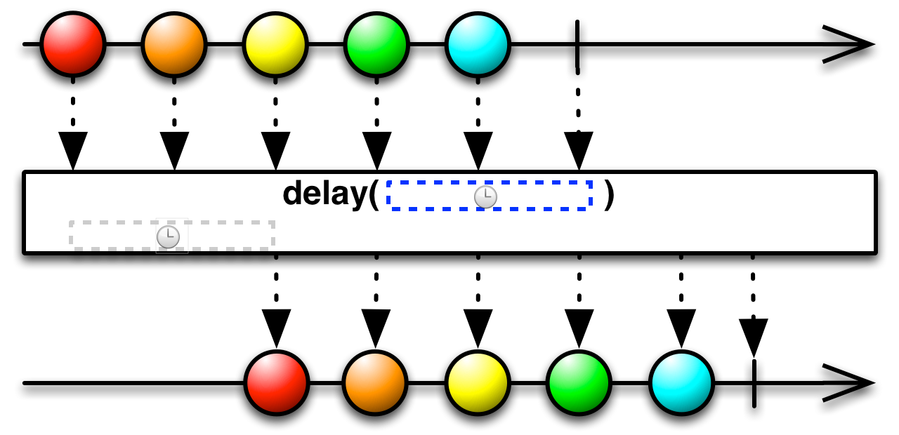
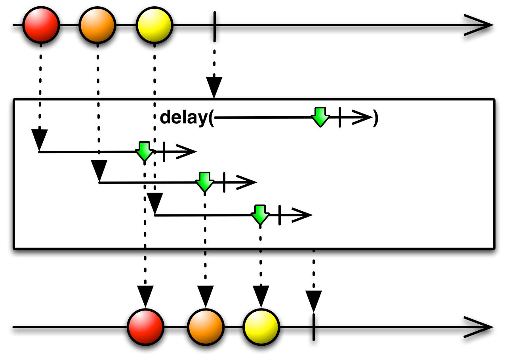
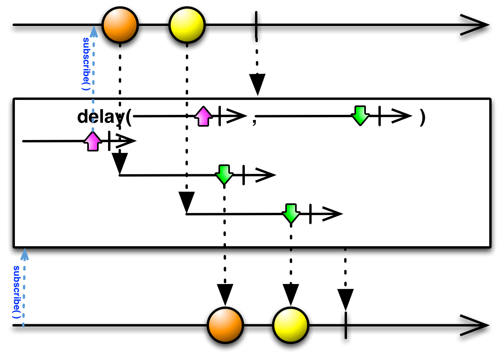
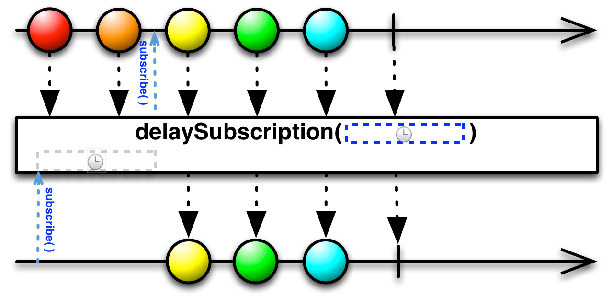
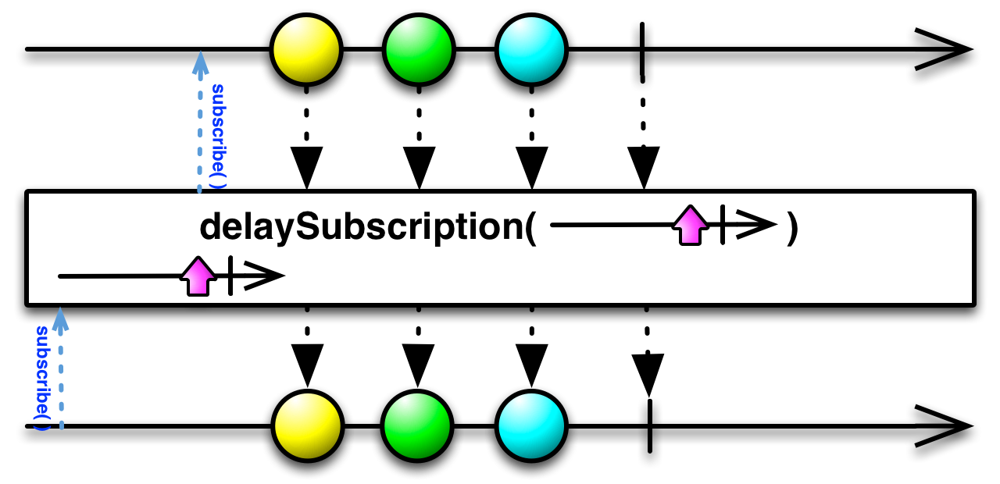

延迟一段指定的时间再发射来自Observable的发射物
Delay操作符让原始Observable在发射每项数据之前都暂停一段指定的时间段。效果是Observable发射的数据项在时间上向前整体平移了一个增量。
RxJava的实现是 delay和delaySubscription。

第一种delay接受一个定义时长的参数（包括数量和单位）。每当原始Observable发射一项数据，delay就启动一个定时器，当定时器过了给定的时间段时，delay返回的Observable发射相同的数据项。
注意：delay不会平移onError通知，它会立即将这个通知传递给订阅者，同时丢弃任何待发射的onNext通知。然而它会平移一个onCompleted通知。
delay默认在computation调度器上执行，你可以通过参数指定使用其它的调度器。

另一种delay不实用常数延时参数，它使用一个函数针对原始Observable的每一项数据返回一个Observable，它监视返回的这个Observable，当任何那样的Observable终止时，delay返回的Observable就发射关联的那项数据。
这种delay默认不在任何特定的调度器上执行。

这个版本的delay对每一项数据使用一个Observable作为原始Observable的延时定时器。
这种delay默认不在任何特定的调度器上执行。

还有一个操作符delaySubscription让你你可以延迟订阅原始Observable。它结合搜一个定义延时的参数。
delaySubscription默认在computation调度器上执行，你可以通过参数指定使用其它的调度器。

还有一个版本的delaySubscription使用一个Obseable而不是一个固定的时长来设置订阅延时。
这种delaySubscription默认不在任何特定的调度器上执行。